Lesson 8: indents-and-tabs
Lesson 8: Indents and Tabs
/en/word/using-find-and-replace/content/
Introduction
Indenting text adds structure to your document by allowing you to separate information. Whether you'd like to move a single line or an entire paragraph, you can use the tab selector and the horizontal ruler to set tabs and indents.
Watch the video below to learn more about how to use indents and tabs in Word.
[](../../../../../www.youtube.com/embed/vJGYWVe52T4.webm)
Indenting text
In many types of documents, you may want to indent only the first line of each paragraph. This helps to visually separate paragraphs from one another.

It's also possible to indent every line except for the first line, which is known as a hanging indent.

To indent using the Tab key:
A quick way to indent is to use the Tab key. This will create a first-line indent of 1/2 inch.
- Place the insertion point at the very beginning of the paragraph you want to indent.
 2. Press the Tab key. On the Ruler, you should see the first-line indent marker move to the right by 1/2 inch.
3. The first line of the paragraph will be indented.
2. Press the Tab key. On the Ruler, you should see the first-line indent marker move to the right by 1/2 inch.
3. The first line of the paragraph will be indented.
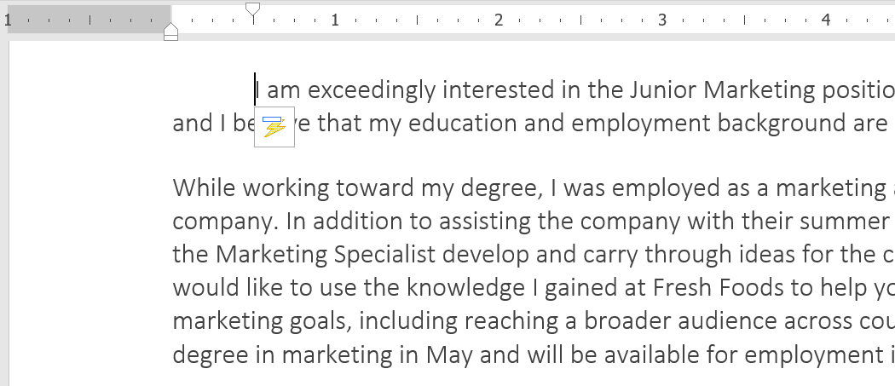
If you can't see the Ruler, select the View tab, then click the checkbox next to the Ruler.
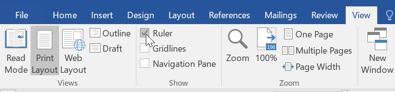
Indent markers
In some cases, you may want to have more control over indents. Word provides indent markers that allow you to indent paragraphs to the location you want.

The indent markers are located to the left of the horizontal ruler, and they provide several indenting options:
- First-line indent marker adjusts the first-line indent
- Hanging indent marker adjusts the hanging indent
- Left indent marker moves both the first-line indent and hanging indent markers at the same time (indenting all lines in a paragraph)
To indent using the indent markers:
- Place the insertion point anywhere in the paragraph you want to indent, or select one or more paragraphs.
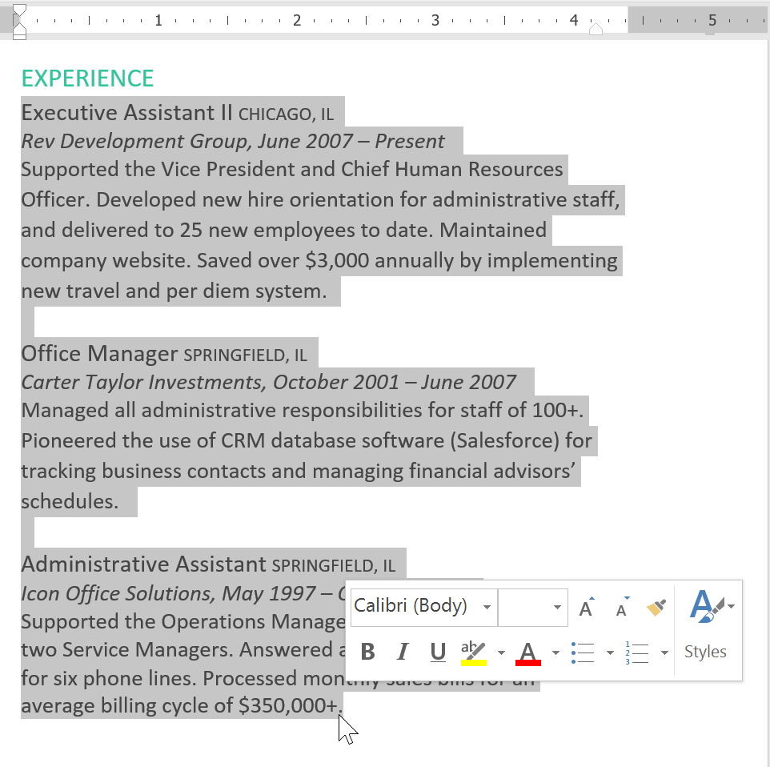
2. Click and drag the desired indent marker. In our example, we'll click and drag the left indent marker.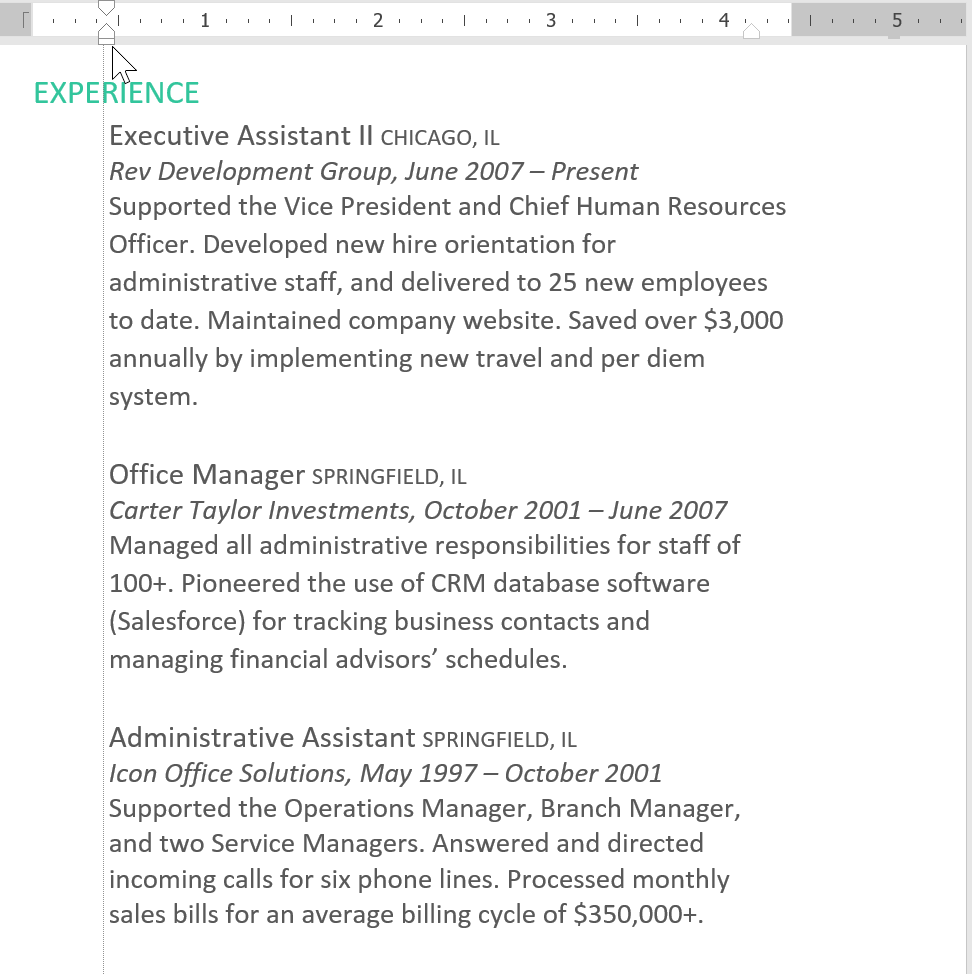
3. Release the mouse. The paragraphs will be indented.To indent using the Indent commands:
If you want to indent multiple lines of text or all lines of a paragraph, you can use the Indent commands. The Indent commands will adjust the indent by 1/2-inch increments.
- Select the text you want to indent.
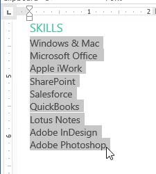
2. On the Home tab, click the Increase Indent or Decrease Indent command.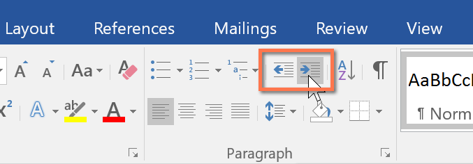
3. The text will indent.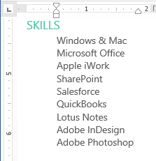
To customize the indent amounts, select the Layout tab near the desired values in the boxes under Indent.

Tabs
Using tabs gives you more control over the placement of text. By default, every time you press the Tab key, the insertion point will move 1/2 inch to the right. Adding tab stops to the Ruler allows you to change the size of the tabs, and Word even allows you to apply more than one tab stop to a single line. For example, on a resume you could left-align the beginning of a line and right-align the end of the line by adding a Right Tab, as shown in the image below.
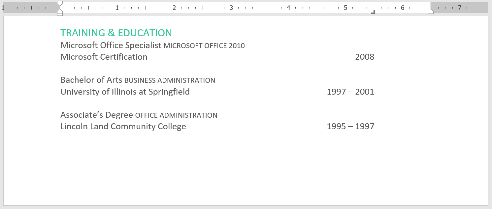
Pressing the Tab key can either add a tab or create a first-line indent, depending on where the insertion point is. Generally, if the insertion point is at the beginning of an existing paragraph, it will create a first-line indent; otherwise, it will create a tab.
The tab selector
The tab selector is located above the vertical ruler on the left. Hover the mouse over the tab selector to see the name of the active tab stop.
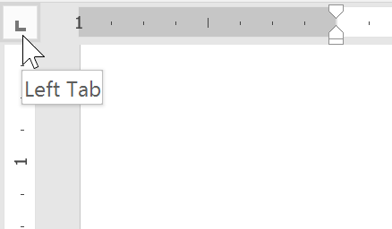
Types of tab stops:
- Left Tab left-aligns the text at the tab stop
- Center Tab centers the text around the tab stop
- Right Tab right-aligns the text at the tab stop
- Decimal Tab aligns decimal numbers using the decimal point
- Bar Tab draws a vertical line on the document
- First Line Indent inserts the indent marker on the Ruler and indents the first line of text in a paragraph
- Hanging Indent inserts the hanging indent marker and indents all lines other than the first line
Although Bar Tab, First Line Indent, and Hanging Indent appear on the tab selector, they're not technically tabs.
To add tab stops:
- Select the paragraph or paragraphs you want to add tab stops to. If you don't select any paragraphs, the tab stops will apply to the current paragraph and any new paragraphs you type below it.
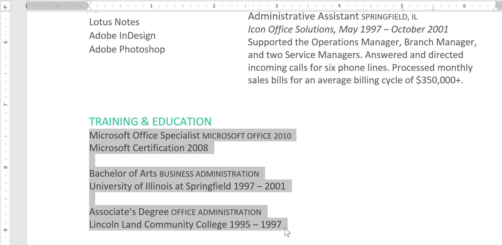
2. Click the tab selector until the tab stop you want to use appears. In our example, we'll select Right Tab. 3. Click the location on the horizontal ruler where you want your text to appear (it helps to click the bottom edge of the Ruler). You can add as many tab stops as you want.
3. Click the location on the horizontal ruler where you want your text to appear (it helps to click the bottom edge of the Ruler). You can add as many tab stops as you want.
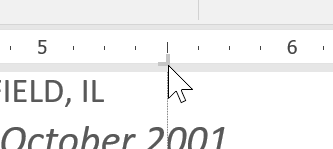
4. Place the insertion point in front of the text you want to tab, then press the Tab key. The text will jump to the next tab stop. In our example, we will move each date range to the tab stop we created.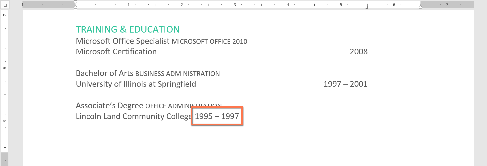
Removing tab stops
It's a good idea to remove any tab stops you aren't using so they don't get in the way. To remove a tab stop, first select all of the text that uses the tab stop. Then click and drag it off of the Ruler.

Word can also display hidden formatting symbols such as spaces (), paragraph marks (), and tabs () to help you see the formatting in your document. To show hidden formatting symbols, select the Home tab, then click the Show/Hide command.
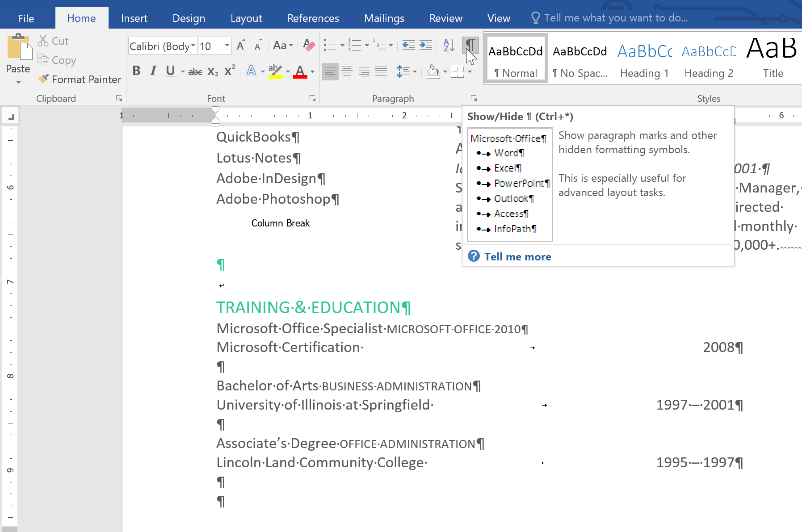
Challenge!
- Open our practice document.
- Use the Tab key to indent the beginning of each paragraph in the body of the cover letter. These start with I am exceedingly interested, While working toward, and Enclosed is a copy.
- When you're finished, the first page should look like this:
4. Scroll to page 2. 5. Select all of the text below Training & Education on page 2. 6. Place a right tab at the 6" (15.25 cm) mark. 7. Insert your cursor before each date range, then press the Tab key. These dates include 2008, 1997-2001, and 1995-1997. 8. Select each job description under the Experience section, and move the left indent to the 0.25" (50 mm) mark. 9. When you're finished, page 2 should look something like this:
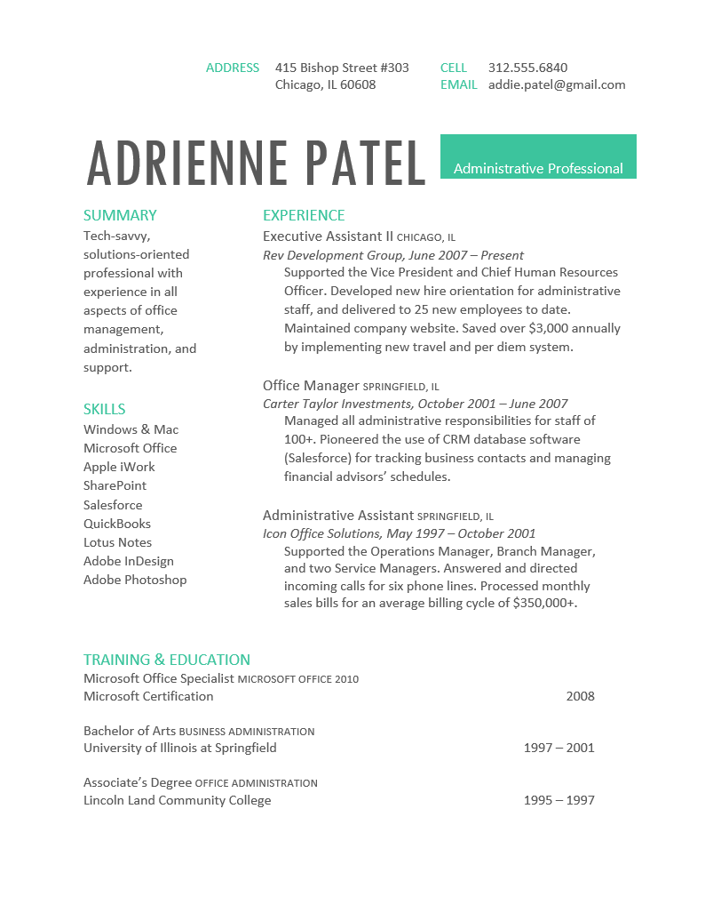
/en/word/line-and-paragraph-spacing/content/